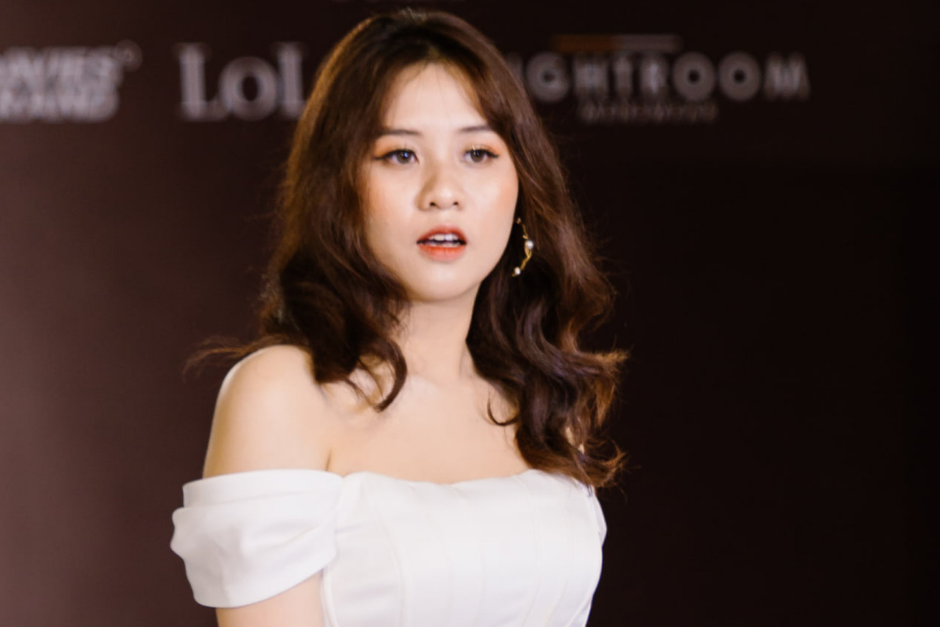

Organizer & Model
FASHION RUNWAY "DEFINE YOURSELF"
The Define Yourself fashion workshop of FPTU Da Nang took place successfully and received a "rain of compliments" from guests, sponsors and a large number of F-Students. With costumes from sponsors Lightroom, Davie's, LoLem and makeup support from Jong APhuong, the "models" of the F family have received many positive reviews with their skilled calkwalk steps. Especially, not only was I one of the core team members in the program organizing committee, I also had the opportunity to become one of the models, confidently walking on the Runway of the F family.